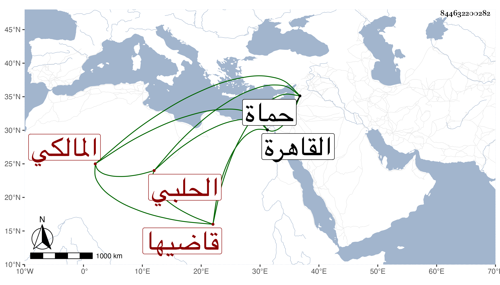

0902Sakhawi.DawLamic.ITO20230111-ara1.EIS1600.844632200282
Biography ID: 844632200282
273
عبد الله الجمال بن النحريري الحلبي قاضيها المالكي . ممن كان يتناوب للسعي فيه هو وابن جنغل الماضي إلى أن وافقه ذلك على تقرير قدر يومي يدفعه له بشرط إعراضه عن السعي وترك المنصب له واستمر حتى مات مقلا في اواخر سنة ست وتسعين مصروفا وكان يكثر القدوم إلى القاهرة ويتردد إلي أحيانا وله طلب ومشاركة في الجملة لكنه مزري الهيئة عفا الله عنه وهو من بيت ، وأظنه ولي قضاء حماة أيضا بل أظنه ولد أحمد بن عبد الله الماضي وأنه مات في سنة أربعين وهو قد ولي أيضا قضاء منهما .
